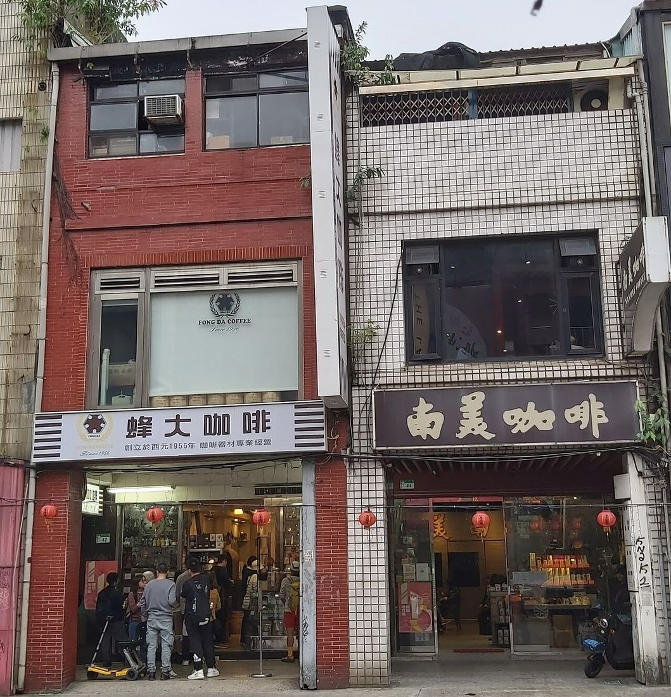
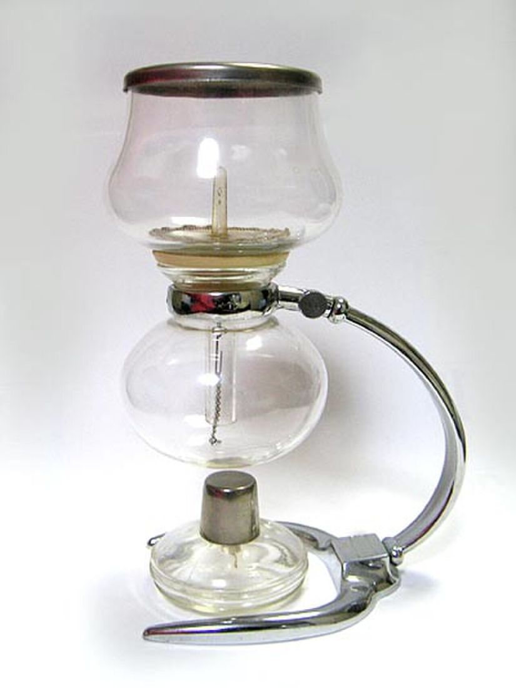
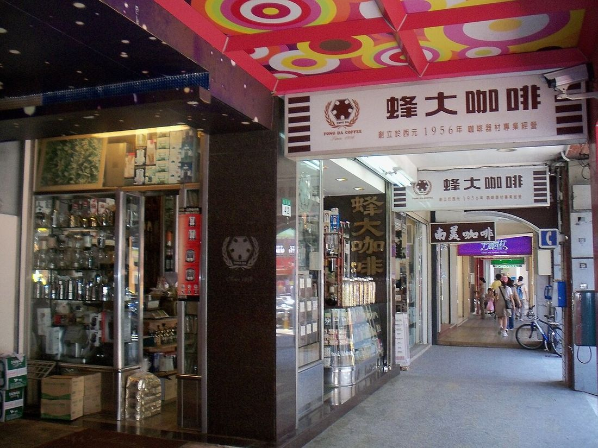

台北老店．西門町
南美咖啡：蜂大隔壁的虹吸老店
西門町成都路，有兩家同一年開的老咖啡館，就住隔壁。

上一集講了蜂大，這一集是它的鄰居：成都路 44 號的南美咖啡。
也是一九五六年
南美也是一九五六年創立，資料寫創辦人叫王振富。它一開始是雜貨店，後來改做糕餅。
一九六二年，專做咖啡豆
一九六二年成立南美公司，專做咖啡豆的進口、烘焙和販售。有資料說，它是台灣最早自己烘豆的咖啡店之一。
八點開門的經典早餐
早上八點就開門，火腿蛋三明治配一杯咖啡，是這裡的經典早餐。店裡的黑咖啡，主要用虹吸壺煮。
專業點：虹吸壺怎麼運作
先加熱下壺，蒸氣壓力把熱水推上上壺，和咖啡粉泡在一起；大約四五十秒後離火，下壺一降溫，咖啡就穿過濾布、被吸回下壺。
老照片與街景


店家資訊
- 店家
- 南美咖啡
- 地點
- 台北市萬華區成都路 44 號
- 現況
- 營業中
- 營業時間
- 常有變動，出發前請再確認
- IG 影片
- 12/11 上片
你喝過虹吸咖啡嗎？跟手沖比，你喜歡哪一種？留言告訴我們
到 IG 留言告訴我們
到 IG 留言告訴我們